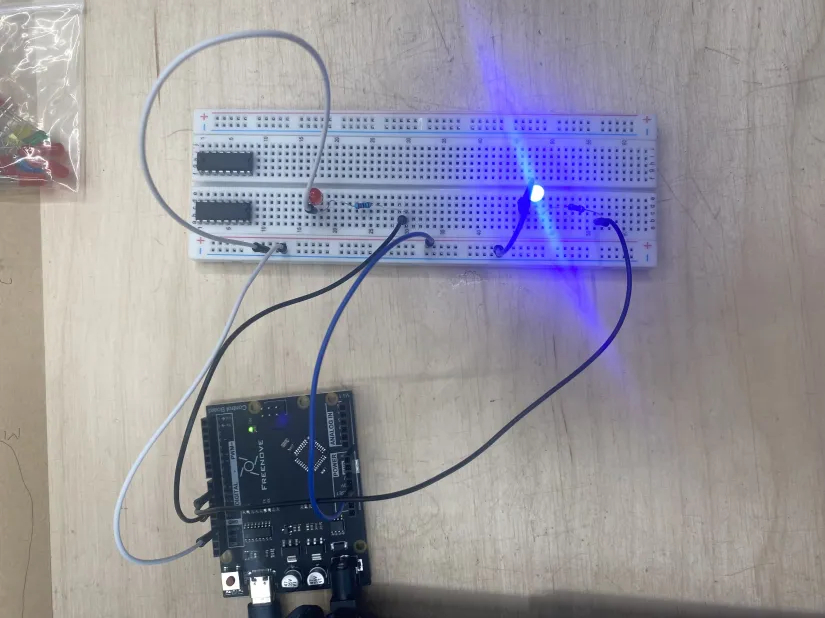
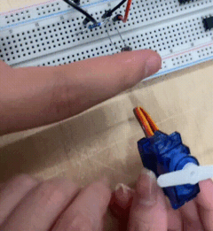

blink buzz vroom
blink!
I started off with a simple LED light circuit and a program that causes it to blink at specified intervals. Though the circuitry was simple to set up, one thing I had to keep in mind was the breadboard's layout and the importance of grounding, due to the power source I used being my laptop. Improper circuitry could lead to the damage of components on the breadboard, or of the Arduino control board itself. I modified the circuitry and the Arduino code slightly so that the blinking would alternate between two different LEDs.
touch!
I experimented with the light sensor in a circuit, adding a motor so it would spin slightly to indicate the sensor's activation. I will need to explore how this component works further, as it took a few attempts of blocking the sensor's light source with my finger for it to work. I also tested the potential of using different conductive materials in order to complete a circuit.

The most complex circuit I created was one that would display a custom scrolling animation on an 8x8 LED grid. I used a tool that converted a bitmap sprite to a series of hex codes, which the Arduino would interpret as binary (meaning a LED in a certain position woukd either be off or on). Due to insufficient power, the LED grid only functioned partially, but it displayed the intended scrolling animation.